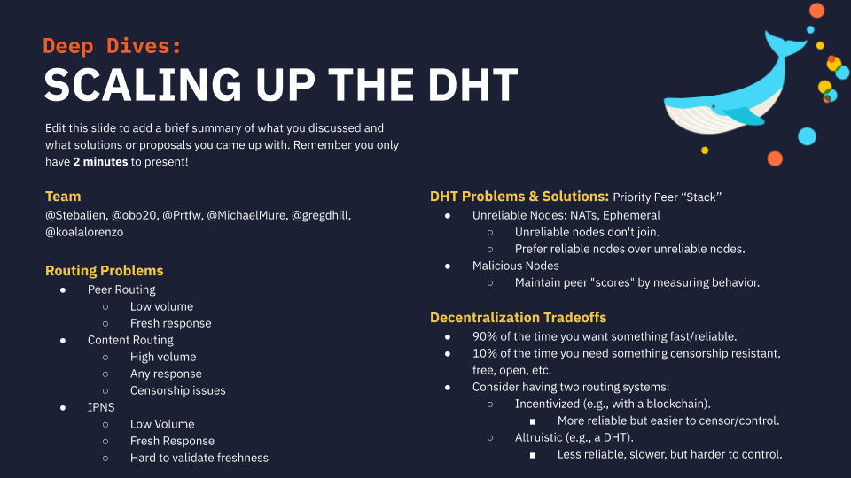

IPFS Camp 2019 (June 27-30)
I was extremely humbled to attend the first ever Interplanetary File System (IPFS) camp last week. It comprised approximately three days of tutorials, lectures and problem solving in the idyllic Campus La Mola, a short distance from Barcelona, Spain. There were roughly 150 attendees from around the globe who came together to discuss ideas for the distributed web, focusing on content addressable methods of data dissemination and persistence but expanding on higher level technologies which build upon these ideas. For instance, the first day started with some core modules which explored concepts such as data processing and retrieval, but later led onto some lightning talks from developers whom had incorporated IPFS into their stack. A good example of this was qri.io who summarized problems of traditional data management in normal analysis workflows, notably audibility, and defined a method for describing mutability by bundling verifiable datasets with runtimes and configurations in a similar manner to git. Another talk which hit close to home was presented by an employee of Netflix who was experimenting with containerd over IPFS for improving download speeds at scale compared to that of centralized registries. I recently started a project called gantry which attempts a similar feat but with any OCI compliant specification, so this talk gave me some great ideas for how I may benchmark my framework. I was also particularly surprised and excited to see Juan Benet give an opening keynote on the first day of camp to welcome attendees and emphasize the importance of the work we do. In true interplanetary style this all took place in a hall filled with planets hanging from the ceiling and an entrance corridor decorated as a space ship with complementary smoke effects!
Reconnaissance
There were a few group challenges during the camp where we got to explore more challenging aspects of IPFS. Experienced members of Protocol Labs led specific hands-on poster projects and ‘deep dives’ in which they endeavoured to dissect real-world problems they face to enlighten how the community may get involved. I opted to ‘specialize’ in Distributed Hash Tables (DHT) - think networked key-value stores - to learn exactly how the Kademlia protocol operates. For the poster project we attempted to present how a content identifier (CID) is linked to a particular host over a decentralized network, and how a party may later resolve that reference. We did this by likening the each step to a salmon swimming upstream with its peers until we determine the right path. The next day I then participated in a more intrinsic debate on scalability problems, analyzing possible routing problems and how they may be addressed, of which the biggest concern was determined to be unreliable nodes - commonly hidden behind a Network Address Translation (NAT) device which obscures explicit connections. Our primary solution was to adopt some form of trust system, whereby nodes would be ranked by the number of successful connection attempts or forwards and punished by misinformation.

As the camp was winding down, we got the chance to participate in some ‘unconfs’ - informal discussions of prior and future endeavors. I particularly enjoyed connecting with a developer from Parity to discuss how we may leverage IPFS more natively in some of our blockchain frameworks, for which there is no firm answer. One other developer mentioned the problem with encryption on IPFS as we no longer get the benefits of de-duplication since this content is designed to be probabilistically unique under the security of the given function and key. In response, I discussed how I use a system called hoard to deterministically encrypt a file using the hash of its plaintext data. This means that an object encrypted at rest can still be de-duplicated by anyone with knowledge of the original input. This was relevant as one use-case we have of this is to ensure referential integrity of objects we link to in certain smart contracts. I also attended another discussion on zero-knowledge proofs which led to some discussion about Zcash and how proving keys are mined at genesis.
Landing
After many wonderful discussions and a lot of delicious food the camp ended on Sunday with yet another talk from Juan Benet on how to stay involved with IPFS. This was followed by a small graduation ceremony in which my deep dive team were even fortunate enough to win a small prize for attempting to ‘tame the beast’! Looking back on my time, I was really lucky to be able to meet so many keen advocates of both open source and decentralization and I hope to meet my fellow cadets again.